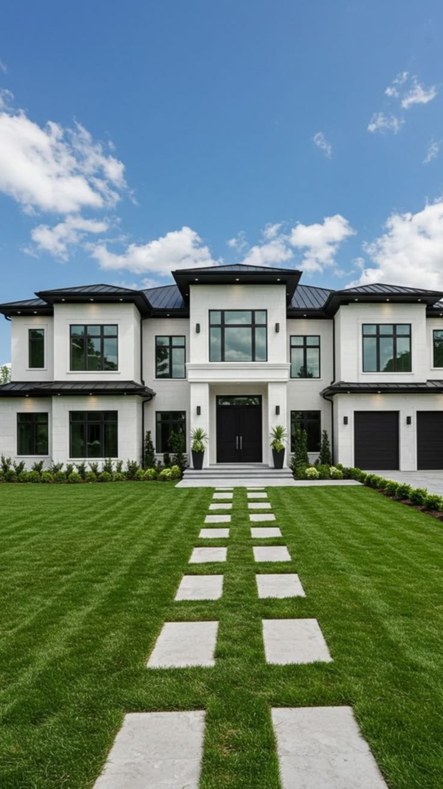
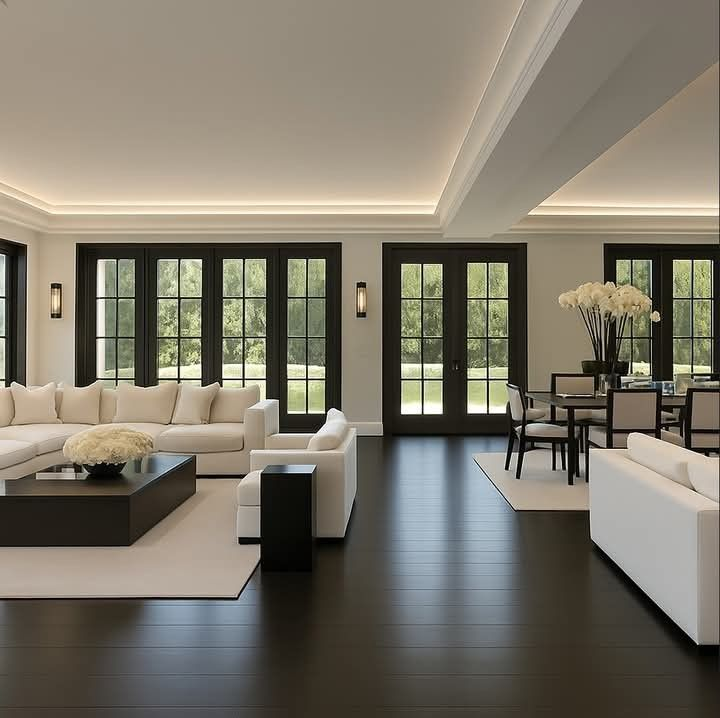
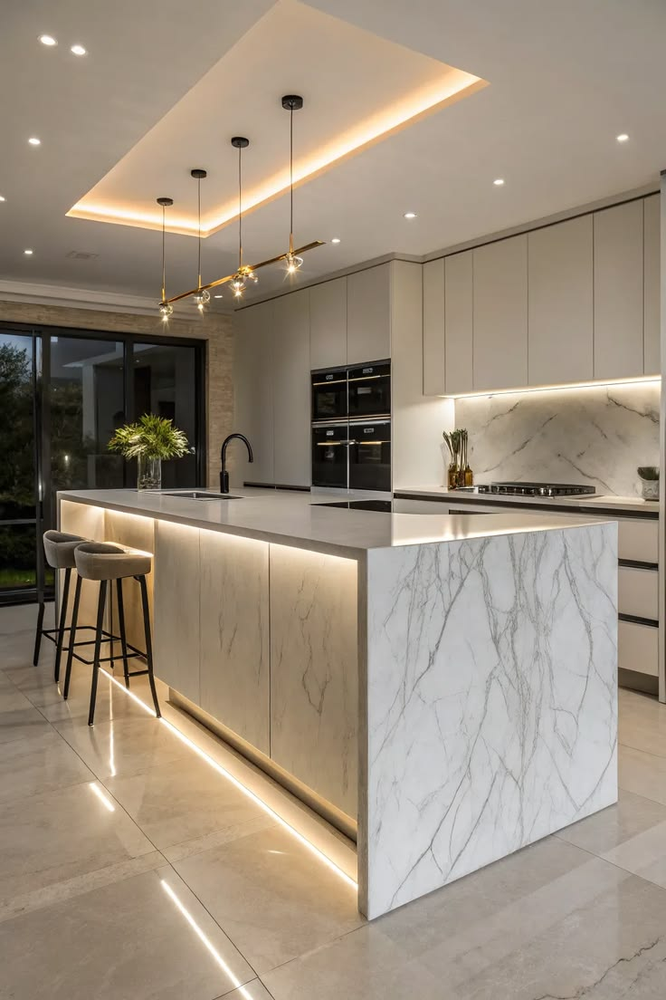
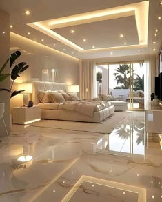
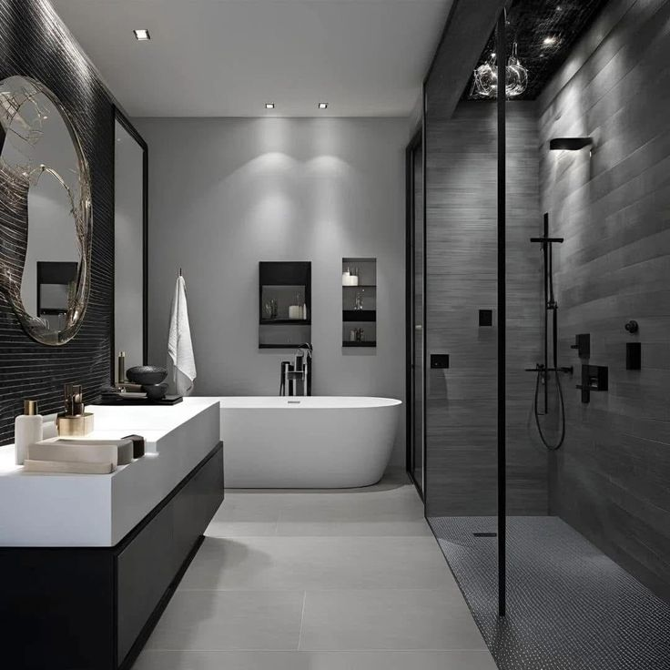

A spacious country residence presented through its architecture, living spaces and refined indoor details — designed for a slower, more private way of living.
Kajiado Country Estate brings the calm of open-country living into a polished residential setting. The showcase is built around generous spaces, natural light and a home that feels connected to its surroundings.
Explore the residence room by room below.
Five property photographs from the Kajiado residence are presented directly from the TinaH Real Estate property collection.





Speak with TinaH Real Estate about availability, viewing arrangements and the next steps for this residence.
Contact TinaH Real Estate ↗